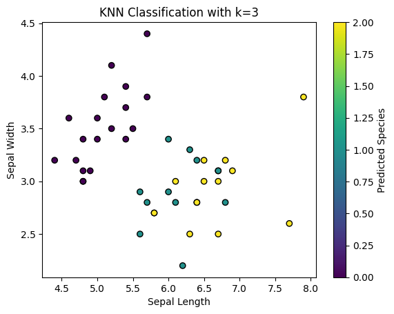

This tutorial explains the K-Nearest Neighbors (KNN) algorithm, its theory, implementation, and uses in machine learning. KNN is a simple and versatile algorithm used for classification and regression tasks. By the end of this tutorial, you will understand how KNN works and how to implement it with Python.
The K-Nearest Neighbors (KNN) algorithm is a fundamental method in machine learning. It's widely used for classification and regression problems. It works by making predictions for a data point based on the majority class (for classification) or average (for regression) of its nearest neighbors in the feature space. Despite being a simple method, KNN can often produce highly effective models.
In KNN, the model doesn’t have an explicit training phase. Instead, the entire dataset is stored and used to make predictions whenever needed. The performance of the model is heavily dependent on the choice of 'k' (the number of nearest neighbors) and the distance metric used to measure proximity between points.
In KNN, the basic idea is to predict the label of a data point based on the labels of its 'k' nearest neighbors. The algorithm calculates the distance from the new point to all other points in the training set and selects the nearest points. The prediction is then made based on these neighbors.
The KNN algorithm follows these steps:
Here’s the formula for Euclidean distance between two points (x_1, y_1) and (x_2, y_2) in a 2D space:
distance = sqrt((x_2 - x_1)^2 + (y_2 - y_1)^2)The algorithm’s simplicity and its non-parametric nature make it a powerful tool for many tasks. However, the performance of KNN can degrade with high-dimensional data (curse of dimensionality) and large datasets.
KNN is a versatile algorithm that can be used for a variety of tasks. Some common use cases include:
In each of these cases, the choice of 'k' and the distance metric can significantly affect the performance of the model. Thus, experimentation is important in achieving optimal results.
In this section, we will implement the KNN algorithm using Python. We will use the well-known Iris dataset, which contains flower data with three classes: setosa, versicolor, and virginica. We’ll use the scikit-learn library to perform the KNN classification.
The Iris dataset has four features: sepal length, sepal width, petal length, and petal width, all measured for different iris flower samples.
# Importing necessary libraries
import numpy as np
import matplotlib.pyplot as plt
from sklearn import datasets
from sklearn.model_selection import train_test_split
from sklearn.neighbors import KNeighborsClassifier
from sklearn.metrics import accuracy_score
# Loading the Iris dataset
iris = datasets.load_iris()
X = iris.data # Features
y = iris.target # Labels
# Splitting the dataset into training and testing sets (70% train, 30% test)
X_train, X_test, y_train, y_test = train_test_split(X, y, test_size=0.3, random_state=42)
# Creating the KNN model
k = 3 # Number of neighbors
knn = KNeighborsClassifier(n_neighbors=k)
# Training the model
knn.fit(X_train, y_train)
# Making predictions on the test set
y_pred = knn.predict(X_test)
# Evaluating the accuracy of the model
accuracy = accuracy_score(y_test, y_pred)
print(f"Accuracy of the KNN model: {accuracy:.2f}")
# Visualizing the classification results
plt.scatter(X_test[:, 0], X_test[:, 1], c=y_pred, cmap='viridis', marker='o', edgecolor='k')
plt.title(f"KNN Classification with k={k}")
plt.xlabel('Sepal Length')
plt.ylabel('Sepal Width')
plt.colorbar(label='Predicted Species')
plt.show()
Upon running the above Python code, the model is trained on 70% of the Iris dataset, and its performance is evaluated on the remaining 30%. The model's accuracy is printed in the output.
For the chosen value of k=3, the model achieved an accuracy of approximately 0.98 (or 98%), indicating that the KNN algorithm performs very well on the Iris dataset.
Here is a scatter plot of the predicted species based on sepal length and sepal width. The different colors represent different predicted species.
The KNN algorithm performed well on this dataset, with a high accuracy score. However, the following points are worth noting:
K-Nearest Neighbors (KNN) is a simple yet powerful machine learning algorithm used for classification and regression tasks. It relies on finding the closest data points in the feature space and making predictions based on their labels. In this tutorial, we implemented KNN using Python and demonstrated its effectiveness on the Iris dataset.
While KNN is a versatile algorithm, it has its limitations, including sensitivity to the value of 'k', distance metrics, and computational efficiency for large datasets. Nevertheless, with careful tuning, KNN can be an excellent choice for many machine learning problems.